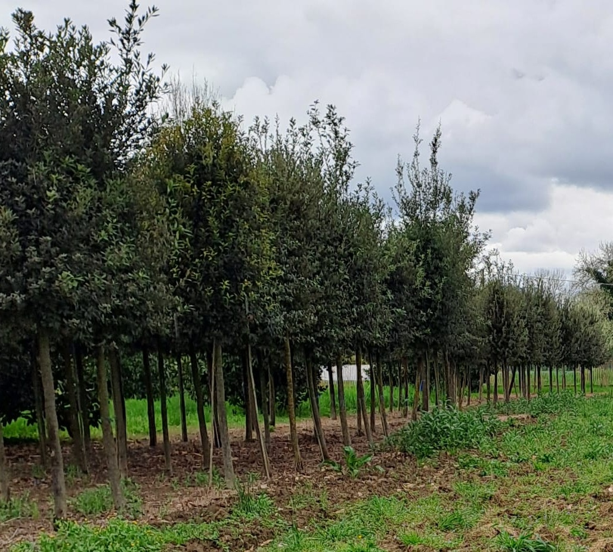

| Scientific Name | Quercus ilex | Authority | Linnaeus |
|---|
| Common Name | Holm Oak, Holly Oak, evergreen oak | Family | Fagaceae |
|---|
| Genus | Quercus | Species | ilex |
|---|
| Plant type | Tree (evergreen, broadleaf) | Height (m) | Up to 20–25 meters |
|---|
| Lifespan | Perennial (very long-lived, up to 500+ years) | Growth Form | Large evergreen tree with dense crown |
|---|
| Leaf | Simple, oblong to oval, often leathery, entire or spiny (especially in young trees) at the margin, thick texture, leathery, and glossy on top
dark green above, pale and downy below, persistent year-round. |
|---|
| Flowering | Spring (typically March to May), unisexual flower type (separate male and female flowers on the same plant – monoecious). |
|---|
| Inflorescence | Catkins (male flowers in long hanging clusters), female flowers small, solitary or in groups, often less noticeable. |
|---|
| Color | Yellowish-green | Pollination | Wind-pollinated |
|---|
| Root type | Deep Taproot (in young plants) with extensive lateral roots in mature trees |
|---|
| Adaptations and soil anchorage | Drought-tolerant, adapted to dry Mediterranean soils; helps access deep groundwater;Strong; stabilizes the tree in rocky or poor soils. |
|---|
| soil | Adaptable – prefers well-drained soils, tolerates sandy, loamy, rocky, and clay soils, slightly acidic to alkaline (approx. pH 6.0–8.5), grows in poor, nutrient-deficient soils;
does not require fertilization; drought-tolerant once established; dislikes waterlogged soils; moderate tolerance to soil salinity. |
|---|
| Native To | Mediterranean Basin, Southern Europe (Spain, Italy, France, Greece, Portugal), North Africa (Morocco, Algeria, Tunisia), parts of Western Asia. |
|---|
| Climate Zone and altitude | Mediterranean climate – hot, dry summers and mild, wet winters, 0-1500 m s.l.m. In general xerofilous and termophilic plant |
|---|
| Uses | Timber, firewood, livestock fodder (acorns), erosion control, ornamental, habitat for wildlife. |
|---|
| Fruits | Nut (acorn), enclosed partially in a woody cupule, 1.5–2.5 cm long, green when immature, turning brown as they ripen, about 6–8 months to mature, typically ripening in autumn, dispersed by animals and gravity. |
|---|
| Germination | Acorns germinate readily if conditions are moist; no dormancy period needed. Acorns do not germinate in dry and dehydrated conditions. They do not recover germination if re-exposed to humidity. |
|---|
| Image |
 |
|---|